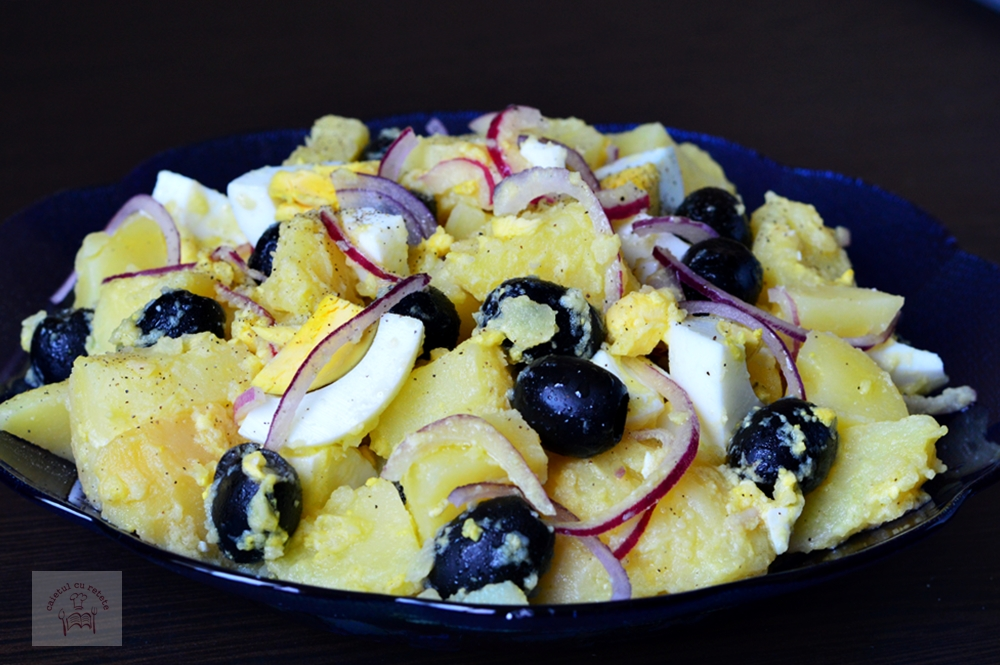

Oriental salad.

Description
A verry simple and tasty salad, best eaten straight out of the frige durring the summer days.
Ingredients
- Potatoes 3 kg
- 3 eggs
- Olives 200 grames
- 2 onions
- Salt, peper, viniger and olive oil. As needed
Steps
- Boil the potatoes for 40 minutes
- Boil the eggs until hardboiled
- Cut the potatoes and eggs in bitesized pieces
- Cut the onion julien
- Put everithing in a boul and mix with salt, pepper, viniger and olive oil.